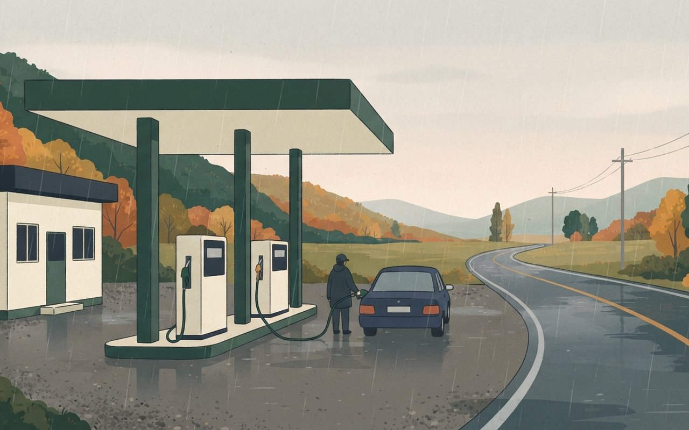
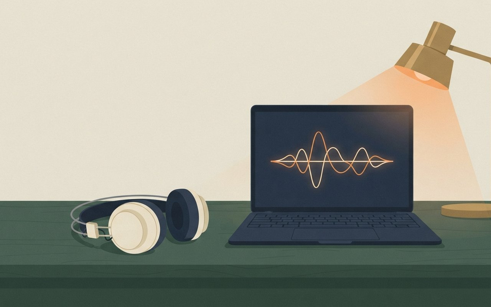

🎧 낭독 원고 보기
11월 14일 토요일, 데일리 브리프입니다. 오늘은 여섯 가지 소식을 전해 드립니다.
코스피가 장 초반 5,500선을 넘었다가 결국 내렸습니다. 13일 코스피는 3퍼센트 넘게 올라 장중 5,504까지 갔지만, 낮 12시 30분쯤 하락으로 돌아서 0.98퍼센트 내린 5,290.53으로 마감했습니다. 이틀 연속 하락입니다. 외국인이 5천억 원 넘게 팔았고, SK하이닉스는 3퍼센트, 삼성전자는 1퍼센트 가까이 내렸습니다. 한국전력은 3분기 영업이익 감소 공시에 10퍼센트 가까이 떨어졌습니다. 한국경제는 엔비디아 주가 하락과 미국의 대중국 수출규제 강화 우려를 원인으로 꼽았습니다. 코스닥은 0.45퍼센트 올랐고, 원달러 환율은 1,336원대입니다.
젠슨 황 사임의 여파가 이어지고 있습니다. 배경훈 부총리는 엔비디아가 첨단 GPU 26만 장 공급 계획을 기존 발표대로 추진한다고 재확인했다고 밝혔습니다. 정부 몫 5만 장 가운데 약 2만 1천 장은 확보했습니다. 한국 투자자의 엔비디아 보관액은 한 달여 만에 약 6조 8천억 원 줄었습니다. CBS에 따르면 러트닉 미 상무장관은 12월 10일 상원에서 증언하기로 했습니다.
구글의 고정밀 지도 반출이 마지막 관문을 넘었습니다. 국토교통부는 13일 구글이 보안 조건을 지켰는지 확인했습니다. 구글은 한국 영토의 위도와 경도 표시를 지우거나 제한했고, 군사·보안시설 경계 50미터 안의 거리 사진을 지웠습니다. 2007년부터 이어진 요구입니다. 중대한 위반이 있으면 허가를 멈추거나 거둬들입니다.
기름값 최고가격이 4주 더 그대로 갑니다. 14일 0시부터 휘발유는 리터당 1,784원, 경유는 1,773원, 등유는 1,380원입니다. 국제유가가 지금 상한을 정한 6월 말보다 배럴당 20달러 넘게 높아 동결했습니다.
AI가 부른 노래가 처음으로 멜론 톱100 1위에 올랐습니다. 머무르의 '꿈꾸던 어른이 되었나요?'가 13일 오후 5시 기준 1위였습니다. 6월 발매 뒤 약 5개월 만입니다. 가사는 사람이 썼고, 노래는 생성형 음악 AI로 만들었습니다.
마이크로소프트의 아웃룩과 팀즈가 세계적으로 멈췄습니다. 한국 시간 13일 새벽부터 장애 신고가 13만 건 넘게 쌓였고, 70개국 넘는 곳에서 신고가 나왔습니다. 마이크로소프트는 사이버 공격이 아닌 기술 문제라고 밝혔습니다. 한국일보에 따르면 여러 서버가 갑자기 멈추면서 나머지 서버에 부담이 몰렸습니다. 국내 기업과 대학에서도 업무 차질이 이어졌습니다.
끝으로 오늘 서울 날씨입니다. 아침 최저 10도, 낮 최고 14도입니다. 새벽부터 전국 대부분 지역에 비가 내리니 우산 챙기세요.
이상으로 오늘의 데일리 브리프를 마칩니다. 자세한 내용과 출처는 카드에서 확인하세요.
反
증시 · 13일 마감
코스피 13일 5,290.53(-0.98%) 이틀째 하락 — 장중 5,504.44까지 올랐다가 외국인 매도에 하락 전환
13일 코스피는 전 거래일보다 52.20p(0.98%) 내린 5,290.53으로 마감해 이틀째 내렸다(뉴시스·한국경제). 2.05% 오르며 출발해 장 초반 3% 넘게 올라 5,500선을 넘었지만, 낮 12시 30분께부터 하락으로 돌아섰다(뉴시스). 장중 고가는 5,504.44, 저가는 5,259.09다(시사저널e). 코스닥은 3.13p(0.45%) 오른 699.66으로 마감했다. 원/달러 환율은 6.0원 오른 1,336.7원이다(뉴스1).
외국인 순매도 규모는 매체마다 다르다 — 뉴시스는 5,475억 원, 시사저널e는 7,033억 원이다. SK하이닉스는 3.03% 내린 121만 6,000원, 삼성전자는 0.96% 내린 20만 6,000원이다. 한국전력은 3분기 영업이익 감소 공시에 9.79% 내렸다. 한국경제는 엔비디아의 12일(현지시간) 4.34% 하락, 미국의 대중국 수출규제 강화 우려, 자본시장 간담회 뒤 구체적 대책이 없다는 실망을 하락 원인으로 꼽았다.
- 코스피(13일)5,290.53 · -52.20p(-0.98%) · 이틀째 하락
- 장중고가 5,504.44(장 초반) · 저가 5,259.09 · 낮 12시 30분께 하락 전환
- 코스닥(13일)699.66 · +3.13p(+0.45%)
- 환율1,336.7원 · +6.0원
- 종목SK하이닉스 121만 6,000원(-3.03%) · 삼성전자 20만 6,000원(-0.96%) · 한국전력 -9.79%
- 외국인 순매도5,475억 원(뉴시스) · 7,033억 원(시사저널e) — 매체별 불일치
- 확인 한계14일 새벽 뉴욕증시 마감은 반영하지 않음 ⚠ 변동 가능
Marketing View · 마케터의 시선
하루 안에 3% 오름과 1% 내림이 다 나왔다. 엔비디아 경영 공백이 반도체 대형주에 먼저 닿았다. 17일 엔비디아 실적 발표가 다음 주 방향을 정할 변수다. 이 카드는 투자 권유가 아니다.
뉴시스 — 코스피 이틀째 하락 한국경제 — 13일 마감 시사저널e — 장중 고가·수급 뉴스1 — 환율
뉴시스(11/13 15:51)·한국경제(11/13 15:38)·시사저널e(11/13 16:48)·뉴스1(11/13 16:12) · 지수·SK하이닉스·삼성전자는 세 매체 일치, 한국전력(-9.79%·3분기 영업이익 감소 공시)은 시사저널e 기준, 장중 흐름은 뉴시스, 고가·저가는 시사저널e, 원인 분석은 한국경제, 환율은 뉴스1 기준 · 외국인 수급은 매체별 불일치 (확인 2026-11-14)
코스피 장중 3% 오르다
0.98% 내려 마감
13일 코스피가 장 초반 5,500선을 넘었다가 오후에 하락으로 돌아섰어요. 외국인 매도에 SK하이닉스가 3.03% 내렸고, 코스닥은 0.45% 올랐어요.
5,504.44|장중 고가 · 오전
5,290.53|종가 · 이틀째 하락
낮 12시 30분께 하락 전환 / 원·달러 1,336.7원
供
엔비디아 · 한국 영향
정부 "엔비디아, GPU 26만 장 공급 그대로" — 국내 투자자 보관액 6조 8,000억 원 줄어, 러트닉 12월 10일 상원 증언
젠슨 황 사임 뒤 배경훈 부총리는 페이스북에 엔비디아가 첨단 GPU 26만 장 공급과 국내 기업 협력을 회사 차원에서 기존 발표대로 추진할 계획임을 재확인했다고 썼다(뉴시스). 과학기술정보통신부는 13일 오전 류제명 2차관 주재로 엔비디아코리아와 긴급 점검회의를 열었다. 정부 몫 5만 장 가운데 약 2만 1,000장은 확보했고 약 1만 4,000장은 2027년 초까지 들어올 예정이며, 민간 몫은 약 21만 장이다.
국내 투자자의 엔비디아 보관액은 10월 6일 192억 달러에서 11일 140억 9,489만 달러로 51억 1,237만 달러(약 6조 8,000억 원, 26.6%) 줄었다(뉴시스, 예탁결제원 기준). 미국에서는 하워드 러트닉 상무장관이 12월 10일 상원 은행위원회에서 증언하기로 동의했다(CBS). 쟁점은 엔비디아 칩을 중국으로 빼돌린 혐의를 받는 싱가포르 회사 메가스피드 제재다.
- GPU 공급26만 장 기존 발표대로 추진 재확인(배경훈 부총리) · 정부 몫 5만 장(약 2만 1,000장 확보, 약 1만 4,000장 2027년 초까지 입고) · 민간 약 21만 장
- 정부 대응13일 오전 류제명 2차관·엔비디아코리아 긴급 점검회의
- 국내 투자자보관액 192억 달러(10/6) → 140억 9,489만 달러(11일) · -51억 1,237만 달러(약 6조 8,000억 원, -26.6%)
- 미국 일정17일 엔비디아 3분기 실적 · 12월 10일 러트닉 상무장관 상원 은행위 증언(CBS)
- 확인 한계증언 날짜는 CBS 단일(미 당국자 인용) · 보관액은 예탁결제원 집계를 인용한 뉴시스 기준 ⚠ 변동 가능
Marketing View · 마케터의 시선
정부가 하루 만에 '공급 약속은 그대로'라는 메시지를 낸 것은 불확실성이 국내 AI 계획 전체로 번지는 것을 막으려는 신호다. 다만 실제로 들어온 정부 몫은 5만 장 가운데 절반이 안 된다. 남은 물량이 제때 들어오는지가 약속의 무게를 정한다.
뉴시스 — GPU 26만 장 재확인 뉴시스 — 엔비디아 보관액 CBS — 러트닉 증언 YTN — 17일 실적 예정
뉴시스(11/13 17:48·11/13 11:36)·CBS(11/13 10:13 EST) · GPU·점검회의는 뉴시스, 보관액은 뉴시스(예탁결제원 세이브로), 증언 날짜·메가스피드는 CBS, 17일 실적 일정은 YTN(11/13 03:56) 기준 (확인 2026-11-14)
엔비디아 GPU 26만 장,
정부 "공급 그대로"
젠슨 황 사임 뒤 정부가 엔비디아의 GPU 공급 계획을 재확인했어요. 국내 투자자의 엔비디아 보관액은 한 달여 만에 26.6% 줄었어요.
13일 점검회의|17일 실적 발표|12/10 상원 증언
6조 8,000억 원|국내 투자자 보관액 감소 · 10/6→11일
圖
구글맵 · 국토부
구글 1:5,000 고정밀 지도 반출, 보안조건 이행 확인 — 2007년부터 이어진 요구, 중대 위반 땐 허가 중단·회수
국토교통부는 13일 '기본측량성과 국외반출 협의체'에서 구글의 보안조건 이행 결과를 확인했다(뉴시스). 2026년 2월 조건부로 허가한 1:5,000 지도가 대상이고, 구글은 4일 최종 보고서를 냈다. 구글은 구글맵·구글어스에서 한국 영토의 위·경도를 지우거나 표시를 제한했고, 군사·보안시설 내부와 경계 50m 안의 거리 사진(스트리트뷰)을 지웠다.
국토지리정보원이 보안 처리한 영상을 국내 협력사를 통해 받기로 8월 말 계약했고, 구글코리아 대표가 국내 지도 책임자를 맡는다. 중대한 위반이 있으면 허가를 중단하거나 회수한다(뉴시스·뉴스1). 구글은 2007년부터 반출을 요구해 왔고, 지금까지 국내에서는 도보·차량 길찾기를 제공하지 못했다. 구글은 23일 '공간정보산업 상생 협력 포럼'을 연다. 길찾기 서비스 시작일은 나오지 않았다.
- 확인13일(11/13) 국토부 국외반출 협의체 · 구글 최종 보고서 4일(11/4) 제출
- 대상1:5,000 지도 · 2026년 2월(2026.2) 조건부 허가
- 보안 조치한국 영토 위·경도 제거·표시 제한 · 군사·보안시설 내부·경계 50m 이내 스트리트뷰 삭제 · 보안 처리 영상은 국내 협력사 통해 받음(8월 말 계약)
- 관리구글코리아 대표가 국내 지도 책임자 · 중대 위반 시 허가 중단·회수
- 다음23일 구글 '공간정보산업 상생 협력 포럼' · 길찾기 시작일 미정
Marketing View · 마케터의 시선
외국인 관광객이 가장 익숙한 지도 앱에서 길찾기가 열리면 지방 관광지의 '찾아오기 쉬움'이 달라진다. 반대로 국내 지도 앱은 장소 정보·결제 연결처럼 구글이 아직 못 하는 쪽으로 차별점을 옮겨야 하는 시점이다.
뉴시스 — 구글 지도 반출 최종 확인 뉴스1 — 보안조건 이행 뉴시스 — 구글 상생 포럼
뉴시스(11/13 12:26, 수정 13:30·11/13 12:11)·뉴스1(11/13 14:00) · 보안 조치·허가 중단·회수는 두 매체 일치, 책임자·8월 계약·2007년 요구는 뉴시스 기준 (확인 2026-11-14)
구글 고정밀 지도,
반출 마지막 관문 통과
국토부가 13일 구글의 보안조건 이행을 확인했어요. 한국 영토 좌표 표시를 지우고 군사시설 주변 거리 사진을 지웠어요. 중대 위반 땐 허가를 거둬요.
2007년 첫 요구|2026.2 조건부 허가|11/4 최종 보고서|11/13 이행 확인
50m|군사·보안시설 경계 · 스트리트뷰 삭제
油
생활 · 휘발유·경유·등유
기름값 최고가격 4주 더 동결 — 휘발유 1,784원·경유 1,773원·등유 1,380원, 14일 0시부터
정부가 석유 최고가격을 그대로 두기로 했다(뉴시스). 14일 0시부터 4주 동안 리터당 휘발유 1,784원, 경유 1,773원, 등유 1,380원이 적용된다. 10차 때와 같은 가격이다.
두바이유·브렌트유 가격이 지금 상한을 정한 6월 말보다 배럴당 약 20달러 넘게 높아 동결했다. 중동 상황에 따라 기간 중에도 조정할 수 있다.
- 최고가격(리터당)휘발유 1,784원 · 경유 1,773원 · 등유 1,380원 · 10차와 같음
- 기간14일 0시부터 4주 · 중동 상황 따라 조정 가능
- 동결 이유두바이유·브렌트유가 6월 말보다 배럴당 약 20달러 이상 높음
- 확인 한계연속 동결 횟수는 매체 제목마다 달라 싣지 않음 · 뉴시스 단일 본문 ⚠ 변동 가능
Marketing View · 마케터의 시선
가격 상한이 4주 더 이어지면 주유소 간 가격 차이는 상한 아래에서만 생긴다. 소비자에게는 '어디서 넣어도 이 값을 넘지 않는다'는 기준선이 생긴 셈이다. 연말 이동이 많은 시기까지는 이 기준선이 유지된다.
뉴시스 — 석유 최고가격 동결
뉴시스(11/13 18:00, 수정 18:28) 단일 본문 · 뉴스1은 같은 동결을 제목으로 보도(본문 미확인) (확인 2026-11-14)
기름값 최고가격,
4주 더 그대로
14일 0시부터 4주 동안 석유 최고가격이 그대로 적용돼요. 상한을 정한 6월 말보다 국제유가가 배럴당 약 20달러 넘게 높아 동결했어요.
1,784원|휘발유 리터당 최고가격
A quiet Korean roadside gas station at dawn in light autumn rain, fuel pumps with blank price displays, a single car refueling, flat illustration, no text, no logos

경유 1,773원 / 등유 1,380원
曲
음원 · 멜론 톱100
AI가 부른 노래, 멜론 톱100 처음으로 1위 — 머무르 '꿈꾸던 어른이 되었나요?', 발매 약 5개월 만
머무르의 '꿈꾸던 어른이 되었나요?'가 13일 오후 5시 기준 멜론 톱100 1위에 올랐고 오후 6시에도 1위를 지켰다(세계일보). 6월 23일 발매 뒤 약 5개월 만이다.
세계일보에 따르면 보컬은 생성형 음악 AI '수노'로 만들었고 작사와 기획은 머무르가 맡았다. 경향신문은 "가사는 인간이 썼지만 기본적인 작곡과 가창은 AI가 한 것"이라고 썼다.
- 순위멜론 톱100 1위 · 13일 오후 5시·6시 기준 · AI 활용곡 첫 1위(세계일보·경향신문)
- 곡머무르 '꿈꾸던 어른이 되었나요?' · 6월 23일 발매
- 만든 방식보컬 생성형 AI '수노' · 작사·기획 머무르(세계일보) · 작곡·가창 AI, 가사는 사람(경향)
- 확인 한계실시간 순위라 바뀔 수 있음 · AI가 맡은 범위는 매체마다 설명이 조금 다름 ⚠ 변동 가능
Marketing View · 마케터의 시선
듣는 사람은 '누가 불렀나'보다 '내 이야기 같은가'에 반응했다. 제목처럼 어른이 된 자신에게 묻는 가사가 공감을 샀다. 차트가 AI 곡을 어떻게 표시할지가 업계의 다음 숙제다.
세계일보 — AI 노래 멜론 1위 경향신문 — AI 곡 1위
세계일보(11/13 21:12)·경향신문(11/13 18:17) · 1위·곡명은 두 매체 일치, 시각·발매일·수노는 세계일보, 작곡·가창 설명은 경향 기준 (확인 2026-11-14)
AI가 부른 노래,
멜론 1위 처음
머무르의 '꿈꾸던 어른이 되었나요?'가 13일 멜론 톱100 1위에 올랐어요. 가사는 사람이 쓰고, 노래는 생성형 AI로 만들었어요.
약 5개월|6월 23일 발매 뒤 1위까지
Headphones resting on a desk beside a laptop showing an abstract sound waveform, warm lamp light at night, flat illustration, no text, no logos

13일 오후 5시·6시 기준
障
IT 장애 · 다운디텍터 집계
MS 아웃룩·팀즈 세계적 장애 — 신고 13만 건 넘어, 70개국 이상… "사이버 공격 아닌 기술 문제"
미 동부 시간 12일 오후 1시 직전부터 마이크로소프트의 아웃룩·팀즈·코파일럿 등이 멈췄다(CBS). 한국 시간으로는 13일 새벽이다. 다운디텍터에 아웃룩 장애 신고가 13만 건 넘게 들어왔고, 70개국 이상에서 신고가 나왔다.
MS는 악성 활동이나 사이버 공격이 아닌 기술 문제라고 밝혔고, 근본 원인을 해결해 복구 중이라며 사과했다(CBS). 한국일보에 따르면 MS는 여러 서버가 예기치 않게 멈추면서 나머지 서버에 부담이 몰렸다고 설명했다. 국내 기업·대학에서도 업무 차질이 이어졌다(뉴스1·한국일보).
- 시작미 동부 12일 오후 1시 직전 · 한국 시간 13일 새벽
- 영향아웃룩 · 팀즈 · 코파일럿 · Exchange Online 기반 서비스
- 신고아웃룩 13만 건 이상(다운디텍터) · 70개국 이상
- 원인MS "사이버 공격 아닌 기술 문제" · 여러 서버가 멈춰 나머지 서버에 부담(한국일보)
- 확인 한계신고 수는 서비스별 집계가 매체마다 다름(한국일보: MS365 4만 6,000건 이상) · 완전 복구 시각 미확인 ⚠ 변동 가능
Marketing View · 마케터의 시선
메일과 회의가 한 회사 서비스에 묶여 있으면 장애 하나가 하루 업무를 멈춘다. 중요한 공지·고객 연락에는 다른 채널 하나를 비상용으로 정해 두는 것이 이번 장애의 교훈이다.
CBS — Microsoft outage 한국일보 — MS 장애 뉴스1 — 국내 업무 차질
CBS(11/13 14:00 EST 업데이트)·한국일보(11/13 09:24)·뉴스1(11/13 17:35) · 시작 시각·13만 건·70개국·MS 설명은 CBS, 서버 설명은 한국일보, 국내 차질은 두 매체 · 한국 시각은 환산값 (확인 2026-11-14)
MS 아웃룩·팀즈,
세계적으로 멈춰
한국 시간 13일 새벽부터 MS 아웃룩·팀즈가 멈췄어요. 70개국 넘는 곳에서 신고가 나왔고, MS는 사이버 공격이 아닌 기술 문제라고 했어요.
13만 건|아웃룩 장애 신고(이상) · 다운디텍터
70개국 이상 / 국내 기업·대학도 업무 차질